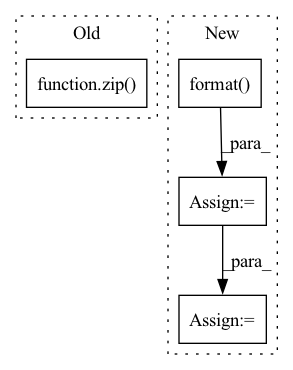

Pattern ID :22307
Before Change
os.makedirs(self._outdir, exist_ok=True)
// Construct the list of arguments to be passed to `_process_file`.
args = list(zip( i3_files, gcd_files) )
// Iterate over batches of files.
try:After Change
filesets,
int(np.ceil(len(filesets) / self._nb_files_to_batch)),
)
batches = [
(group, self._sequential_batch_pattern.format( ix_batch) )
for ix_batch, group in enumerate(batches)
]
self.logger.info(
f"Will batch {len(filesets)} input files into {len(batches)} groups."
)
// Iterate over batches
pool = self._iterate_over_batches_of_files(batches)
elif self._save_strategy == "pattern_batched":
// Define batchesIn pattern: SUPERPATTERN
Frequency: 4
Non-data size: 4
Instances Fragment ID: 70346672
Project Name: graphnet-team/graphnet
Commit Name: 4b712d688f82f415c8e4555404f09fb243a7faad
Time: 2022-06-29
Author: andreas.sogaard@gmail.com
File Name: src/graphnet/data/dataconverter.py
M Class Name: DataConverter
N Class Name: DataConverter
M Method Name: execute(2)
N Method Name: execute(3)
M Parent Class: ABC,LoggerMixin
N Parent Class: ABC,LoggerMixin
M File Name: src/graphnet/data/dataconverter.py
N File Name: src/graphnet/data/dataconverter.py
M Start Line: 163
M End Line: 216
N Start Line: 210
N End Line: 261
Before Change
est = musdb.DB(root=self.estimates_dir, subsets="test", is_wav=True)
results = museval.EvalStore(frames_agg="median", tracks_agg="median")
for track, estimated_track in zip( mus.tracks, est.tracks) :
estimates = {}
for target in self.sources + ["accompaniment"]:
estimates[target] = estimated_track.targets[target].audioAfter Change
estimated_accompaniment = 0
for target in self.sources:
estimated_path = os.path.join(self.estimates_dir, name, "{}.wav".format( target) )
estimated, _ = torchaudio.load(estimated_path)
estimated = estimated.numpy().transpose(1, 0)
estimates[target] = estimated
estimated_accompaniment += estimated Fragment ID: 70346665
Project Name: tky823/dnn-based_source_separation
Commit Name: 47bf376b81ab3a2a1dae78ac3dd78f7458fbb8a1
Time: 2021-08-14
Author: 40362510+tky823@users.noreply.github.com
File Name: egs/musdb18/d3net/src/adhoc_driver.py
M Class Name: AdhocTester
N Class Name: AdhocTester
M Method Name: eval_all(1)
N Method Name: eval_all(1)
M Parent Class: TesterBase
N Parent Class: TesterBase
M File Name: egs/musdb18/d3net/src/adhoc_driver.py
N File Name: egs/musdb18/d3net/src/adhoc_driver.py
M Start Line: 360
M End Line: 372
N Start Line: 359
N End Line: 383
Before Change
def run(self):
results = museval.EvalStore(frames_agg="median", tracks_agg="median")
for track, estimated_track in zip( self.mus.tracks, self.estimated_mus.tracks) :
scores = self.run_one_track(track, estimated_track)
results.add_track(scores)
After Change
estimated_accompaniment = 0
for target in self.sources:
estimated_path = os.path.join(self.estimates_dir, name, "{}.wav".format( target) )
estimated, _ = torchaudio.load(estimated_path)
estimated = estimated.numpy().transpose(1, 0)
estimates[target] = estimated
if target != "vocals": Fragment ID: 70346680
Project Name: tky823/dnn-based_source_separation
Commit Name: ffe57efd9e2dde3201347389cb13de92cf222706
Time: 2021-11-02
Author: delta9guitar97@gmail.com
File Name: egs/musdb18/common/src/driver.py
M Class Name: EvaluaterBase
N Class Name: EvaluaterBase
M Method Name: run(1)
N Method Name: run(1)
M Parent Class:
N Parent Class:
M File Name: egs/musdb18/common/src/driver.py
N File Name: egs/musdb18/common/src/driver.py
M Start Line: 293
M End Line: 297
N Start Line: 302
N End Line: 329